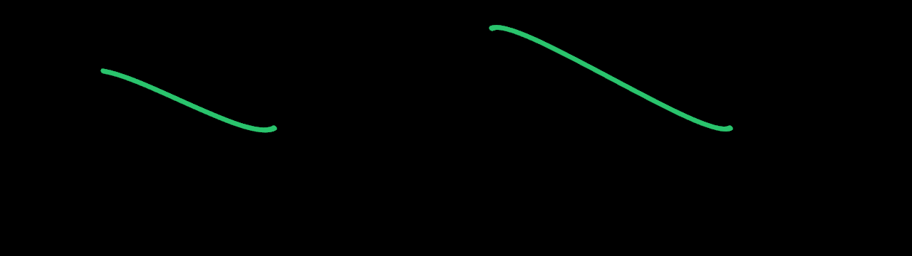
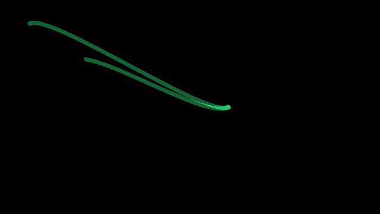
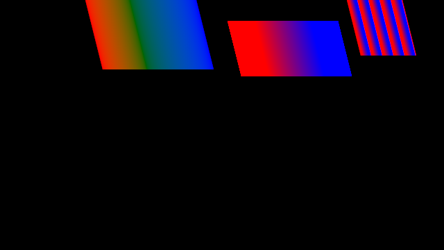
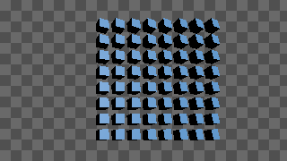

Fold motion replacement
12 October 2026. Work remains. The replacement is not complete.
Changes in this work
- Subdivide paths with aligned Bézier timing. Preserve manual and Auto curve motion. Geometry tests pass.
- Copy a 3D hierarchy. Copies have new object and animation IDs.
- Make geometry or material independent of other objects.
- Change a 3D parent and keep the full animation. Original channels and keys stay intact.
- Select 3D objects in the viewer. Move, rotate, or scale them with viewer handles. Use Undo to restore the previous state.
- Use project images in script controls and repeating native paint. Convert them to editable objects with the same asset IDs.
- Reuse unchanged image and font data in the Motion worker.
- Reserve memory for Skia’s budgeted GPU cache. Reject frames above the allowance. Cache-pressure recovery tests pass. The 38-frame test releases all host memory after worker exit.
- Start native Motion with the bundled worker. Native documents no longer enter script compilation.
- Keep precise GPU paint colors. Signed HDR shader values pass both the renderer check and mixed Float EXR export.
- Review exact animation poses as a contact sheet or onion image. The native MCP workflow passed.
How it works
Artists and agents use the same document and guarded edits. Motion sends native objects and script output through the same fframes and Skia renderer. 3D stays in its own package. Compositing and Timeline use their outputs.
Checks
Nine focused 3D tests passed. Parenting kept world motion at 137 fractional-time samples. Image-control tests also passed. Native Vulkan checks passed for image reuse, replacement, recovery, script images and repeating paint. The complete package producer passed. The relocated build is in target/motion-installed-precision-relocated-20261012. All 19,582 declared file hashes matched. Conversion and rendered-pixel parity passed.
An earlier workspace and all-target check passed in 5.13 seconds. The image-conversion MCP workflow passed in 234.66 seconds. Package boundary and proposal-ownership checks passed, with 20 policy tests. The native frame-review workflow passed in 122.53 seconds. Workspace Clippy completed with existing warnings; the strict warning check did not pass.
The installed CLI rendered native Motion, scripts, 3D and native video. The installed desktop opened. Desktop and CLI pixels matched with the same explicit sRGB display transform.
The user accepted the Motion workspace at normal and narrow widths. With the startup fix, the first native application frame fell from 7.04 to 1.54 seconds. Warm frames took 15.96 ms at the median. The precision package includes both fixes. All file hashes and six relocated CLI render cases passed. This package predates the new cache allowance and Bézier subdivision.
The 64-copy 3D test passed. Copies share one geometry resource and one material. Three rendered poses contain valid pixels and show animation. Sustained speed and native 3D review remain open.
Real review images

Contact sheet: 1/2 second on the left; 0 seconds on the right.

Onion review: equal display-pixel weights. These are rendered images, not desktop screenshots.

Script conversion: original and editable pixels match.

64 copies at 1/2 second. Real GPU output at 320 × 180, enlarged here. This is not a desktop screenshot.
The current workspace run finished: 575 tests passed, two failed and 70 were skipped. The failures used old alpha values and an old operation count. The test values are corrected. All 16 tests in the two affected groups now pass. The current all-target desktop build check passed in 59.79 seconds. The current Clippy check also passed, with warnings.
Open work
Image input currently accepts 8-bit sRGB data. HDR image input, broader color support, complete path workflows, frame speed and the final replacement audit remain open. Other native artist workflows remain open. Mixed Motion/3D HDR preview and Float EXR output match exactly in both alpha modes. Other delivery formats and HDR display remain open. Automated input tests do not replace artist checks.
The available Linux computer tool cannot take a screenshot. No mockup is used as evidence.
See the replacement plan for commands, evidence and limits.